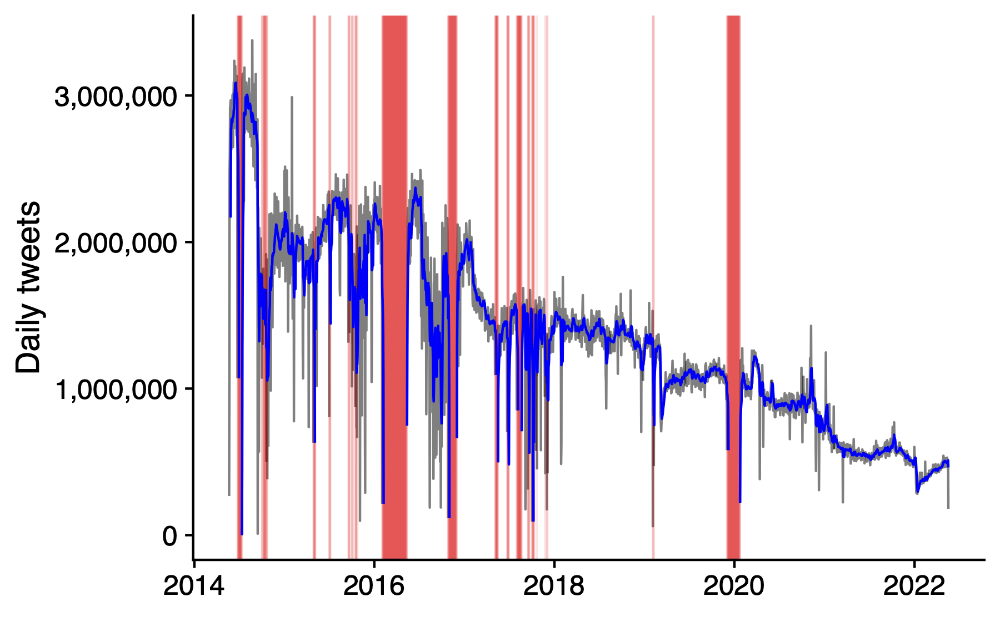
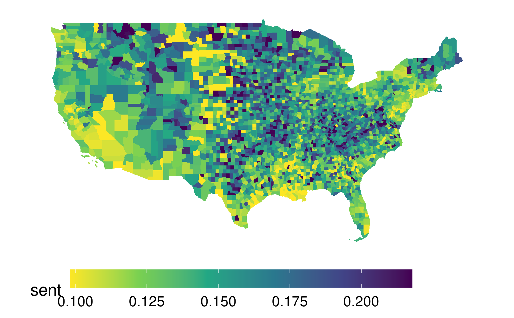

In brief
I am making a dataset of daily average online sentiment by county available for use by interested researchers. You can download the dataset here.
Each observation represents the average sentiment of geo-located tweets for a county-day between 2014 and 2022. I’ve used datasets similar to this one in several different papers to see how people’s online responses vary with, e.g., weather and wildfire smoke. I’m excited to see how else they might be used!
The following sections give a bit more detail on the data (see also the GitHub repository).
Backstory
More than a decade(!) ago, I was a third-year Ph.D. student looking alternative ways to value the amenity value of daily climate patterns. In 2014, Twitter was a fairly new platform that let people to publicly post their thoughts and feelings. It also maintained a Streaming API that made it possible to download nearly all geo-located tweets in real time. I set up an old server in our shared grad student office and it hoovered up tweets for the next few years. That dataset led to my job market paper (which led to my first and current job), as well as several more papers.

Today, Twitter (now X) is owned by Elon Musk and is generally regarded a garbage fire.1 But I think the data I collected may still be useful to some researchers. I’ve been happy to share it with students and other researchers on demand over the years, and it’s been on my list to make it public for anyone to use for a while now.2
Dataset construction
I compute daily averages of county sentiment from 3.5 billion geo-located Twitter social media posts (tweets) that I collected using the (now-discontinued) Twitter Streaming API between 2014-05-22 and 2022-05-18. Each post’s sentiment is computed using the compound score from the VADER sentiment analysis algorithm.
After computing the timezone and local datetime of each post, I compile averages by county-date (i.e., only county-dates with at least one tweet are included). The final dataset includes the following variables, where (*) indicates the unique keys:
fips(*): County FIPS identifier.date(*): Date computed from local timesent: Average sentimentsentN: Number of tweets included in the average
In total, the dataset includes 6,972,641 observations and represents 3,456,549,038 tweets.
Descriptive statistics
The figure below shows the number of tweets included in the data over time. There are a few gaps, typically due to my connection to the API failing for one reason or other. The downward trend in the number of tweets is (I think) due to a combination of declining Twitter activity during this time period and a smaller proportion of tweets being geo-located as a result of changes to the Twitter interface

The maps below show the spatial distributions of the number of tweets and average sentiment.


Citation
I would be thrilled to hear how you use this in your researchg! If you do end up using it, feel free to cite:
Baylis, Patrick. “Temperature and temperament: Evidence from Twitter.” Journal of Public Economics 184 (2020): 104161.